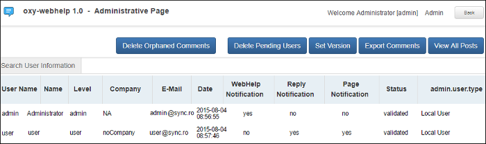

Managing Users and Comments in a Feedback-Enabled System
When you installed the WebHelp with Feedback system the first time (assuming the Create new database structure option was selected), you should have been prompted to create an administrator account (or a user named administrator was created by default). As an administrator, you have access to manage comments posted in your feedback-enabled WebHelp system. You can also manage the user information (such as role, status, or notification options).
- At the bottom of each specific topic, there is a Comments navigation bar and on the right side there is a Log in button. Click this button and log in with your administrator credentials. This gives you access to an Admin Panel button.
-
Click the Admin Panel button to display an administration page.
Figure 1. Administrative Page  -
Use this page to manage the following options:
- Delete Orphaned Comments
- Allows you to delete comments that are no longer associated with a topic in your WebHelp system.
- Delete Pending Users
- Allows you to delete user accounts that you do not wish to activate.
- View All Posts
- Allows you to view all the comments that are associated with topics in your WebHelp system.
- Export Comments
- Allows you to export all posts associated with topics in your WebHelp system into an XML file.
- Set Version
- Use this action to display comments starting with a particular version.
- Manage User Information
-
To edit the details for a user, click on the corresponding row. This opens a window that allows you to customize the following information associated with the user:
- Name
- The full name of the user.
- Level
- Use this field to modify the privilege level (role) for the selected
user. You can choose from the following:
- User - Regular user, able to post comments and receive e-mail notifications.
- Moderator - In addition to the regular User rights, this type of user has access to the Admin Panel where a moderator can view, delete, export comments, and set the version of the feedback-enabled WebHelp system.
- Admin - Full administrative privileges. Can manage WebHelp-specific settings, users, and their comments.
- Company
- The name of the organization associated with the user.
- The contact email address for the user. This is also the address where the WebHelp system sends notifications.
- WebHelp Notification
- When selected, the user receives notifications when comments are posted anywhere in your feedback-enabled WebHelp system.
- Reply Notification
- When selected, the user receives notifications when comments are posted as a reply to one of their comments.
- Page Notification
- When selected, the user receives notifications when comments are posted on a topic where they previously posted a comment.
- Date
- The date the user registered is displayed.
- Status
- Use this drop-down list to change the status of the user. You can choose
from the following:
- Created - The user is created but does not yet have any rights for the feedback-enabled WebHelp system.
- Validated - The user is able to use the feedback-enabled WebHelp system.
- Suspended - The user has no rights for the feedback-enabled WebHelp system.